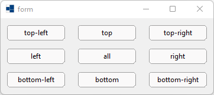
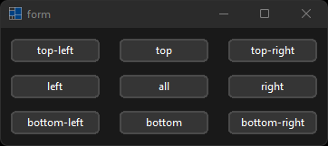
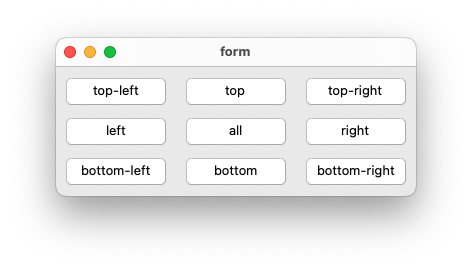
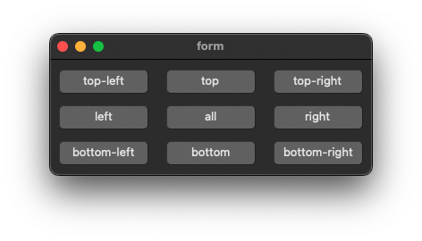
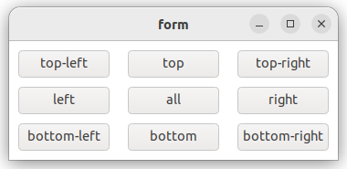
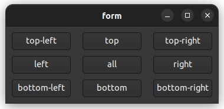

|
xtd
0.2.0
|
Loading...
Searching...
No Matches
anchors.cpp
demonstrates the use of xtd::forms::control::button control with xtd::forms::control::anchor.
- Windows
- 

- macOS
- 

- Gnome
- 

#include <xtd/forms/application>
#include <xtd/forms/button>
#include <xtd/forms/form>
using namespace xtd::forms;
public:
main_form() {
controls().push_back_range({top_left_button, top_button, top_right_button, left_button, all_button, right_button, bottom_left_button, bottom_button, bottom_right_button});
client_size({360, 130});
minimum_client_size(client_size());
text("form");
top_left_button.location({10, 10});
top_left_button.text("top-left");
top_left_button.size({100, 30});
top_button.location({130, 10});
top_button.text("top");
top_button.size({100, 30});
top_button.anchor(anchor_styles::top);
top_right_button.location({250, 10});
top_right_button.text("top-right");
top_right_button.size({100, 30});
top_right_button.anchor(anchor_styles::top | anchor_styles::right);
left_button.location({10, 50});
left_button.text("left");
left_button.size({100, 30});
left_button.anchor(anchor_styles::left);
all_button.location({130, 50});
all_button.text("all");
all_button.size({100, 30});
all_button.anchor(anchor_styles::top | anchor_styles::left | anchor_styles::bottom | anchor_styles::right);
right_button.location({250, 50});
right_button.text("right");
right_button.size({100, 30});
right_button.anchor(anchor_styles::right);
bottom_left_button.location({10, 90});
bottom_left_button.text("bottom-left");
bottom_left_button.size({100, 30});
bottom_left_button.anchor(anchor_styles::bottom | anchor_styles::left);
bottom_button.location({130, 90});
bottom_button.text("bottom");
bottom_button.size({100, 30});
bottom_button.anchor(anchor_styles::bottom);
bottom_right_button.location({250, 90});
bottom_right_button.text("bottom-right");
bottom_right_button.size({100, 30});
bottom_right_button.anchor(anchor_styles::bottom | anchor_styles::right);
}
private:
button top_left_button;
button top_button;
button top_right_button;
button left_button;
button all_button;
button right_button;
button bottom_left_button;
button bottom_button;
button bottom_right_button;
};
auto main()->int {
application::run(main_form());
}
Represents a window or dialog box that makes up an application's user interface.
Definition form.h:52
The xtd::forms namespace contains classes for creating Windows-based applications that take full adva...
Definition xtd_about_box.h:12
Generated on Thu Mar 14 2024 22:04:49 for xtd by Gammasoft. All rights reserved.